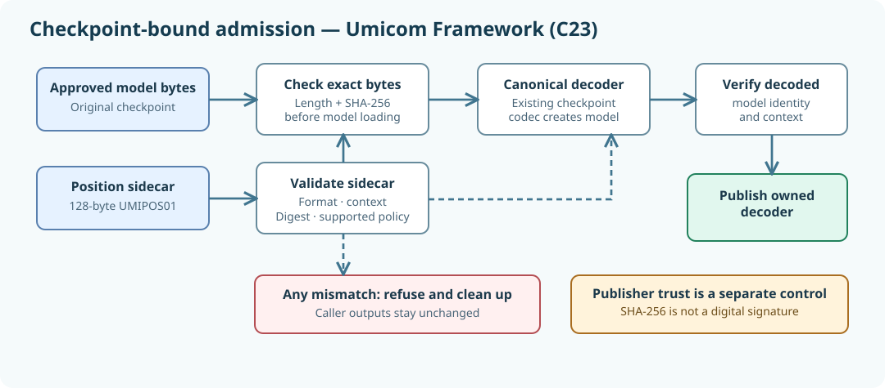

Learning objectives
Turn a positional-encoding declaration into a practical checkpoint admission rule. You will see exactly when a decoder may be constructed, why original checkpoint bytes must be checked before decoding, how to preserve caller-owned output after a rejection, and why content hashes are not a replacement for verifying the software publisher.
1. The practical problem: a valid file is not necessarily the right file
Suppose an Umicom Studio project has a trained native C23 decoder. The developer has approved a checkpoint and a separate position sidecar recording the checkpoint identity, learned-absolute positional embeddings and its generation policy. Both files can be individually well formed yet belong to different training runs. They may have the same vocabulary size, eight-token context and number of attention heads but different weight values. If the application decodes first and checks later, it has constructed a model that should never have been admitted.
In a bank application this resembles checking a transaction's account, currency and authorisation before posting it to the ledger. In the native model loader, we similarly require the correct bytes and declared semantics before the action. The Framework must own this rule because Studio, Umicom LLM and future applications should not each create their own incompatible loading policy.

2. A checkpoint and its 128-byte companion
The existing decoder checkpoint contains weights and other model state in the Framework's established portable binary format. The separate UMIPOS01 position record contains the chosen inference context, the learned-absolute position strategy, the required rollover rebuild policy, a summary of decoder dimensions, the completed optimiser-step count, the checkpoint byte length and its SHA-256 digest.
The sidecar is always 128 bytes. Changing the checkpoint format would break older models. Keeping the declaration separate allows current checkpoints to remain byte-for-byte compatible, while applications can refuse mismatched model identities instead of trying to guess what the original author intended.
| What is checked | Why it is necessary | Failure decision |
|---|---|---|
| Sidecar format, length and digest | Refuse malformed metadata before allocating a decoder. | Reject parsing. |
| Requested context policy | Left-padded and unpadded token positions are not interchangeable. | Reject wrong context. |
| Checkpoint byte count and SHA-256 | Detect an unrelated or altered model file even if its tensor dimensions match. | Reject identity mismatch. |
| Decoded model, encoded again | Independently verify the actual decoder state matches the approved record. | Destroy temporary model and reject. |
3. Use the native Framework admission API
The new public operation is UmiAiTrainingPositionBoundCheckpointDecode. It accepts already acquired byte buffers, not filenames. This makes the function independent of Windows paths, network drives or a user interface. The caller remains responsible for obtaining trusted files through the appropriate Framework security and storage services.
#include "umicom/ai/training/position_admission.h"
/* Input pointers refer to approved, caller-owned byte arrays. */
UmiAiTrainingDecoder *decoder = NULL;
UmiStatus status = UmiAiTrainingPositionBoundCheckpointDecode(
checkpointBytes,
checkpointLength,
sidecarBytes,
sidecarLength,
UMI_AI_POSITION_CONTEXT_GROWING_UNPADDED,
&decoder);
if (status == UMI_STATUS_OK) {
/* The model has the exact declared checkpoint identity and policy. */
UmiAiTrainingDecoderDestroy(decoder);
}The key design feature is not the number of statements. It is their ordering. The function decodes and checks the sidecar, checks the exact original checkpoint bytes with UmiSha256Init, UmiSha256Update and UmiSha256Final, and only then invokes UmiAiTrainingDecoderCheckpointDecode. After decoding, UmiAiTrainingPositionContractVerify checks the actual model. All the mathematical work and checkpoint format remain in their original Framework owners.
4. Memory ownership and failure-atomic publication
In C23, returning a model pointer is an ownership transfer. The successful caller must eventually invoke UmiAiTrainingDecoderDestroy. A rejected operation must leave the output pointer exactly as it was. Otherwise the application could accidentally lose an existing model handle or treat an incomplete model as accepted.
The implementation constructs a temporary pointer named stagedModel. It does not assign *outModel until all checks have succeeded. If the final verification fails, it destroys that temporary model and returns an error. The application can therefore keep its previously active model rather than replacing it with an inconsistent one.
This design is an example of failure atomicity: either the entire action succeeds and the result becomes visible, or it fails and the caller's published state does not change. The same principle applies to Umicom Bank payment approval, a failed file save in Studio and the native LLM checkpoint decoder.
5. The security boundary: SHA-256 is not authentication
A SHA-256 digest identifies particular bytes; it does not prove who supplied them. Someone able to replace both checkpoint and sidecar can calculate new digests for both. A self-consistent but untrusted pair must therefore not be mistaken for a verified release. Applications must obtain trusted provenance or a verified signature and apply appropriate access controls before passing inputs to the admission service.
The new API does not access the filesystem, call a remote AI provider or execute model-generated code. It is a narrow, reusable compatibility check. Maintaining these boundaries is important because treating a hash as a publisher signature would introduce a false security claim.
6. Build and test the real decoder on Windows
Merge the Framework files to their existing repository paths, then configure the opt-in native LLM laboratory. This is interactive PowerShell used for engineering operations, not a Python or PowerShell implementation of the Framework.
Set-Location 'C:\umicom\Umicom-Applications'
$env:Path = 'C:\msys64\ucrt64\bin;' + $env:Path
cmake -S '.\framework\learning\native-llm\prefix-work' `
-B '.\build\windows-ucrt64-native-llm-prefix-debug' `
-G Ninja -DCMAKE_BUILD_TYPE=Debug -DBUILD_TESTING=ON
if ($LASTEXITCODE -ne 0) { throw 'Configuration failed.' }
cmake --build '.\build\windows-ucrt64-native-llm-prefix-debug' `
--target umicom-ai-training-position-admission-roundtrip-test `
umicom-ai-training-position-admission-rejections-test `
umicom-native-llm-position-admission --parallel 2
if ($LASTEXITCODE -ne 0) { throw 'Compilation failed.' }
ctest --test-dir '.\build\windows-ucrt64-native-llm-prefix-debug' `
-R '^framework\.ai\.training\.position_admission_' `
--output-on-failure --no-tests=errorThe test must run against your actual Framework checkout. An isolated API-substitute test can check orchestration but cannot prove the numerical behaviour of the full training decoder or the Windows deployment toolchain.
7. Exercises and checks for understanding
- Explain why a file with the correct decoder dimensions can still be the wrong model.
- What must the loader verify before calling the canonical checkpoint decoder?
- Why does a rejection leave a previously owned
*outModelunchanged? - Suppose both files are rehashed by an unknown third party. Are they automatically trustworthy? Explain.
- Change one byte of a laboratory checkpoint and confirm that the bound loader refuses it while preserving the caller's output handle.
Key lesson: selecting a model is a controlled state transition. Verify source authenticity independently, enforce checkpoint identity and positional semantics, then publish an owned decoder only after all checks pass.